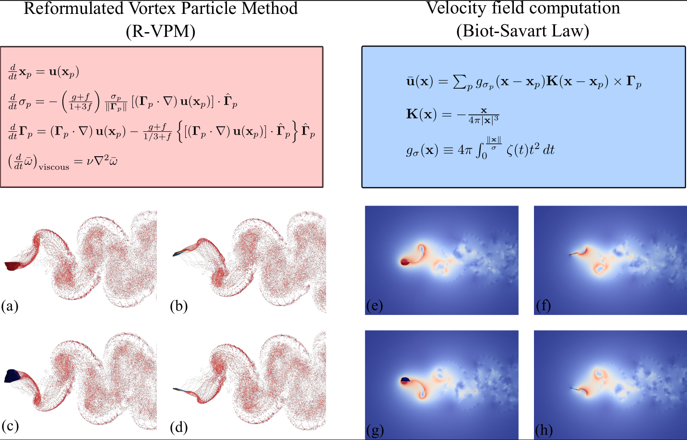
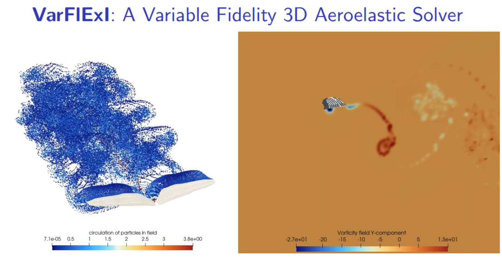

Indian Institute of Technology Hyderabad
Fluid flows and Applied Math
CDFM focuses on the development of computational and machine-learning-based methodologies for the analysis of complex fluid dynamical systems. The research integrates computational fluid dynamics, reduced-order modeling, scientific machine learning, and high-performance computing for unsteady and multi-physics flow problems.
The project also includes the development of in-house numerical solvers, data-driven flow reconstruction techniques, operator-learning frameworks, and aeroelastic simulation tools for fluid dynamics and fluid-structure interaction applications.
1.
Neeraj Balachandar, Yashwanth M., and Vishnu R. Unni,
"Physics Informed Fourier Neural Operator to Map Reformulated Vortex Particle Field to Eulerian Velocity Field”
Accepted for presentation at International Symposium of Turbulence and Shear Flow Phenomenon TSFP14,
Heidelberg, Germany, July 2026
2.
Neeraj Balachandar, Yashwanth M., and Vishnu R. Unni,
“Neural Operator Accelerated Nonlocal Kernel Interactions in Vortex Particle Methods.”
Under preparation for submission to Physics of Fluids (AIP).
3.
Neeraj Balachandar, A. Padmaprabhan, and Vishnu R. Unni,
"VarFlExI - A Variable Fidelity Unsteady Flow - FEniCS Exchange Interface"
Under preparation for submission to Computational Methods in Applied Mechanics and Engineering (CMAME, Science Direct).

